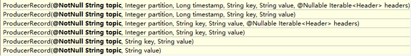

第1章Kafka概述
1.1 定义
Kafka是一个分布式的基于发布/订阅模式的消息队列（Message Queue），主要应用于大数据实时处理领域。
1.2 消息队列
1.2.1 传统消息队列的应用场景

使用消息队列的好处
- 解藕，允许你独立的扩展或修改两边的处理过程，只要确保他们遵守同样的接口约束。
- 可恢复性，系统的一部分组件失效时，不会影响到整个系统。消息队列降低了进程间的耦合度，所以即使一个处理消息的进程挂掉，加入队列中的消息仍然可以在系统恢复后被处理。
- 缓冲，有助于控制和优化数据流经过系统的速度，解决生产消息和消费消息的处理速度不一致的情况。
- 灵活性 & 峰值处理能力，在访问量剧增的情况下，应用仍然需要继续发挥作用，但是这样的突发流量并不常见。如果为以能处理这类峰值访问为标准来投入资源随时待命无疑是巨大的浪费。使用消息队列能够使关键组件顶住突发的访问压力，而不会因为突发的超负荷的请求而完全崩溃。异步通信，很多时候，用户不想也不需要立即处理消息。消息队列提供了异步处理机制，允许用户把一个消息放入队列，但并不立即处理它。想向队列中放入多少消息就放多少，然后在需要的时候再去处理它们。
1.2.1 消息队列的两种模式
点对点模式（
一对一，消费者主动拉取数据，消息收到后消息清除）消息生产者生产消息发送到Queue 中，然后消息消费者从Queue 中取出并且消费消息。消息被消费以后，queue 中不再有存储，所以消息消费者不可能消费到已经被消费的消息。Queue 支持存在多个消费者， 但是对一个消息而言， 只会有一个消费者可以消费。

发布/订阅模式（一对多，消费者消费数据之后消息不会清楚）
消息生产者（发布）将消息发布到 topic 中，同时有多个消息消费者（订阅）消费该消息。和点对点方式不同，发布到 topic 的消息会被所有订阅者消费。

1.3 Kafka基础架构

Producer ：消息生产者，就是向 kafka broker 发消息的客户端；
Consumer ：消息消费者，向 kafka broker 取消息的客户端；
Consumer Group （CG）：消费者组，由多个 consumer 组成。
消费者组内每个消费者负责消费不同分区的数据，一个分区只能由一个组内消费者消费；消费者组之间互不影响。所有的消费者都属于某个消费者组，即消费者组是逻辑上的一个订阅者。Broker ：一台 kafka 服务器就是一个 broker。一个集群由多个 broker 组成。一个 broker可以容纳多个topic。
Topic ：可以理解为一个队列，
生产者和消费者面向的都是一个topic；Partition：为了实现扩展性，一个非常大的 topic 可以分布到多个broker（即服务器）上，
一个topic可以分为多个partition，每个 partition 是一个有序的队列；Replica：副本，为保证集群中的某个节点发生故障时，
该节点上的 partition 数据不丢失，且kafka 仍然能够继续工作，kafka 提供了副本机制，一个 topic 的每个分区都有若干个副本，一个 leader 和若干个 follower。leader：每个分区多个副本的“主”，生产者发送数据的对象，以及消费者消费数据的对象都是leader。
follower：每个分区多个副本中的“从”，实时从 leader 中同步数据，保持和 leader 数据的同步。leader 发生故障时，某个 follower 会成为新的 leader。
第2章Kafka快速入门
第3章Kafka架构深入
3.1 Kafka工作流程及文件存储机制

Kafka 中消息是以 topic 进行分类的，生产者生产消息，消费者消费消息，都是面向 topic的。
topic 是逻辑上的概念，而 partition 是物理上的概念，每个 partition 对应于一个 log 文件，该 log 文件中存储的就是 producer 生产的数据。Producer 生产的数据会被不断追加到该log 文件末端，且每条数据都有自己的 offset。消费者组中的每个消费者，都会实时记录自己消费到了哪个offset，以便出错恢复时，从上次的位置继续消费。

由于生产者生产的消息会不断追加到 log 文件末尾，为防止 log 文件过大导致数据定位效率低下，Kafka 采取了分片和索引机制，将每个 partition 分为多个 segment。每个 segment 对应两个文件——“.index”文件和“.log”文件。这些文件位于一个文件夹下，该文件夹的命名规则为：topic 名称+分区序号。例如，first 这个 topic 有三个分区，则其对应的文件夹为 first- 0,first-1,first-2。
1 | 00000000000000000000.index |
index 和 log 文件以当前 segment 的第一条消息的 offset 命名。下图为 index 文件和 log文件的结构示意图。

“.index”文件存储大量的索引信息，“.log”文件存储大量的数据，索引文件中的元 数据指向对应数据文件中message 的物理偏移地址。
3.2 Kafka生产者
3.2.1 分区策略
分区的原因
方便在集群中扩展，每个 Partition 可以通过调整以适应它所在的机器，而一个 topic又可以有多个 Partition 组成，因此整个集群就可以适应任意大小的数据了；可以提高并发，因为可以以Partition 为单位读写了。
分区的原则
我们需要将 producer 发送的数据封装成一个 ProducerRecord 对象。

- 指明 partition 的情况下，直接将指明的值直接作为 partiton 值；
- 没有指明 partition 值但有 key 的情况下，将 key 的 hash 值与 topic 的 partition数进行取余得到 partition 值；
- 既没有 partition 值又没有 key 值的情况下，第一次调用时随机生成一个整数（ 后面每次调用在这个整数上自增），将这个值与 topic 可用的 partition 总数取余得到partition值，也就是常说的 round-robin 算法。
3.2.2 数据可靠性保证
为保证 producer 发送的数据，能可靠的发送到指定的 topic，topic 的每个 partition 收到producer 发送的数据后，都需要向 producer 发送 ack（acknowledgement 确认收到），如果producer 收到 ack，就会进行下一轮的发送，否则重新发送数据。

副本数据同步策略
方案 优点 缺点 半数以上完成同步，就发送 ack 延迟低 选举新的 leader 时，容忍 n 台节点的故障，需要 2n+1 个副 本 全部完成同步，才发送 ack 选举新的 leader 时，容忍 n 台节点的故障，需要 n+1 个副 本 延迟高 Kafka 选择了第二种方案，原因如下：
- 同样为了容忍 n 台节点的故障，第一种方案需要 2n+1 个副本，而第二种方案只需要 n+1个副本，而Kafka 的每个分区都有大量的数据，第一种方案会造成大量数据的冗余。
- 虽然第二种方案的网络延迟会比较高，但网络延迟对 Kafka 的影响较小。
ISR
采用第二种方案之后，设想以下情景：leader 收到数据，所有 follower 都开始同步数据， 但有一个 follower，因为某种故障，迟迟不能与 leader 进行同步，那 leader 就要一直等下去， 直到它完成同步，才能发送 ack。这个问题怎么解决呢？
Leader 维护了一个动态的 in-sync replica set (ISR)，意为和 leader 保持同步的 follower 集合。当 ISR 中的 follower 完成数据的同步之后，leader 就会给 follower 发送 ack。如果 follower长 时 间 未 向 leader 同 步 数 据 ， 则 该 follower 将 被 踢 出 ISR ， 该 时 间 阈 值 由replica.lag.time.max.ms参数设定。Leader 发生故障之后，就会从 ISR 中选举新的 leader。ack应答机制
对于某些不太重要的数据，对数据的可靠性要求不是很高，能够容忍数据的少量丢失， 所以没必要等ISR 中的 follower 全部接收成功。
所以 Kafka 为用户提供了三种可靠性级别，用户根据对可靠性和延迟的要求进行权衡， 选择以下的配置。
acks 参数配置：
acks:
0：producer 不等待 broker 的 ack，这一操作提供了一个最低的延迟，broker 一接收到还没有写入磁盘就已经返回，当 broker 故障时有可能丢失数据；
1：producer 等待broker 的 ack，partition 的 leader 落盘成功后返回ack，如果在 follower同步成功之前leader 故障，那么将会丢失数据；

-1（all）：producer 等待 broker 的 ack，partition 的 leader 和 follower 全部落盘成功后才返回 ack。但是如果在 follower 同步完成后，broker 发送 ack 之前，leader 发生故障，那么会造成数据重复。

故障处理节
LEO：指的是每个副本最大的 offset；
HW：指的是消费者能见到的最大的 offset，ISR 队列中最小的 LEO。
（1） follower 故障
follower 发生故障后会被临时踢出 ISR，待该 follower 恢复后，follower 会读取本地磁盘记录的上次的HW，并将 log 文件高于 HW 的部分截取掉，从 HW 开始向 leader 进行同步。等该 follower 的 LEO 大于等于该 Partition 的 HW，即 follower 追上 leader 之后，就可以重新加入 ISR 了。
（2） leader 故障
leader 发生故障之后，会从 ISR 中选出一个新的 leader，之后，为保证多个副本之间的数据一致性，其余的 follower 会先将各自的 log 文件高于 HW 的部分截掉，然后从新的 leader同步数据。
注意：这只能保证副本之间的数据一致性，并不能保证数据不丢失或者不重复。
3.2.3 Exactly Once 语义
将服务器的 ACK 级别设置为-1，可以保证 Producer 到 Server 之间不会丢失数据，即 At Least Once 语义。相对的，将服务器 ACK 级别设置为 0，可以保证生产者每条消息只会被发送一次，即At Most Once 语义。
At Least Once 可以保证数据不丢失，但是不能保证数据不重复；相对的，At Least Once 可以保证数据不重复，但是不能保证数据不丢失。但是，对于一些非常重要的信息，比如说交易数据，下游数据消费者要求数据既不重复也不丢失，即 Exactly Once 语义。在 0.11 版本以前的 Kafka，对此是无能为力的，只能保证数据不丢失，再在下游消费者对数据做全局去重。对于多个下游应用的情况，每个都需要单独做全局去重，这就对性能造成了很大影响。
0.11 版本的 Kafka，引入了一项重大特性：幂等性。所谓的幂等性就是指Producer 不论向 Server 发送多少次重复数据，Server 端都只会持久化一条。幂等性结合 At Least Once 语义，就构成了Kafka 的Exactly Once 语义。即：
At Least Once + 幂等性 = Exactly Once
要启用幂等性，只需要将 Producer 的参数中 enable.idompotence 设置为 true 即可。Kafka 的幂等性实现其实就是将原来下游需要做的去重放在了数据上游。开启幂等性的 Producer 在初始化的时候会被分配一个 PID，发往同一 Partition 的消息会附带 Sequence Number。而Broker 端会对<PID, Partition, SeqNumber>做缓存，当具有相同主键的消息提交时，Broker 只会持久化一条。
但是PID 重启就会变化，同时不同的 Partition 也具有不同主键，所以幂等性无法保证跨分区跨会话的Exactly Once。